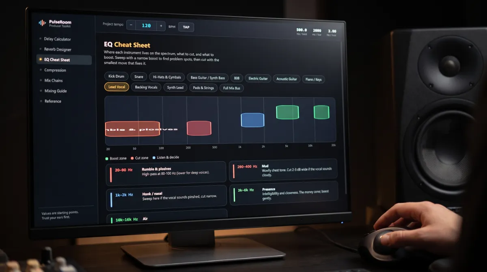

Free · Windows and macOS
PulseRoom
Every mixing answer, at one tempo.
Drop a song into PulseRoom and it finds the tempo, then turns it into delay times, reverb tails, EQ moves and compression settings. It is one desktop app that opens faster than the browser tab it replaces, and it works with the wifi off.
Free · installs through Amanorsac Hub with a free account · works offline once installed

Stop Googling in the Middle of a Mix
The mix is flowing, and then you need to know what delay time fits 140 BPM, where the mud lives on a vocal, or what attack keeps the kick punchy. The answers exist, but they are spread across calculator sites full of ads, a cheat sheet PDF somewhere in your downloads and a YouTube video you half remember. Every lookup costs five minutes and the thread you were pulling.
PulseRoom puts every one of those answers in one place, already set to the tempo of your song. It is the tool the studio uses every session, and it is free.

Tempo Detection
Drag the Song In and It Already Knows
Drop an audio file onto PulseRoom and it works out the BPM in a few seconds. It does this on your computer, so nothing is uploaded and nothing is sent anywhere, which matters when the song is not yours to send. By the time you look up, every delay time and reverb tail on every page is already right for it.
You can also type the BPM, nudge it or tap it in. The tempo bar sits above every page like a DAW transport, with milliseconds per beat and per bar always in view, and the half time and double time buttons move every value with one click.


EQ
See the Spectrum the Way Engineers Hear It
Pick one of thirteen sources, from kick drum to the mix bus, and the boost zones, the cut zones and the ones worth listening to first are painted onto a real log scale spectrum. Each band has the reason underneath it, in plain language.
Everything Beside Your DAW
Seven modules, each one a page you would otherwise have open in a browser. Click any value and it is copied, ready to paste straight into the plug-in with no retyping.

Delay
The Eight Values You Actually Use, First
PulseRoom opens on the delay values that matter, such as 1/4, dotted 1/8 and 1/8 triplet, each with a note on what it is for. Click a card and the millisecond value is on your clipboard. The full grid of twenty one values is one switch away when you need it.

Reverb
A Tail That Ends on the Bar
Pick a space, from a tight ambience to a cathedral, and the pre-delay and decay are sized to the grid, so the tail breathes with the song instead of smearing it. The send EQ curve is drawn for you too, which is the habit that separates clean mixes from muddy ones.

Compression
Attack and Release, Finally Visible
Fourteen sources, each with its gain reduction envelope drawn out. The hit lands, the reduction dives through the attack, holds, then recovers through the release. The most misunderstood pair of knobs in mixing, shown instead of described.

Mix Chains
The Right Order, and Why
Ten sources, from lead vocal to the mastering chain, laid out as numbered steps with the settings for each. A de-esser after the compressor causes problems no EQ will fix, so every chain carries a card that explains why it runs the way it does.

The Mixing Guide
Nine sections of good habits, from gain staging to the mistakes everyone makes.

Reference
LUFS targets for each platform, the frequency map, and note to hertz for tuning 808s.
Fifty Seconds at the Desk
The whole thing, start to finish: tap the tempo, copy the delays, size the reverb and check the loudness.
Why Not Just Google It?
| Browser calculators | PDF cheat sheets | PulseRoom | |
|---|---|---|---|
| Tempo synced values | Typed again on every site | Never | Live, across the app |
| Visual EQ and compression | No | Static and generic | Interactive, per source |
| Explains the why | No | Rarely | Every value |
| Works offline | No | Yes | Yes |
| Click to copy | Rarely | No | Everywhere |
Tech Specs
Platforms
Windows and macOS, from the same build.
Format
Standalone desktop app that sits beside any DAW. Not a plug-in.
Size
About two megabytes.
Tempo
Detection from a dropped audio file, on your computer. Type, nudge or tap (press T). Half and double time.
Delay
Eight essential values first, 21 values in the full grid. Click to copy.
Reverb
Spaces from tight ambience to cathedral, with pre-delay, decay and send EQ sized to the tempo.
EQ
13 sources on a log scale spectrum with boost, cut and listen zones.
Compression
14 sources with drawn gain reduction envelopes.
More
Mix chains for 10 sources, a mixing guide, LUFS targets, a frequency map and note to hertz.
Network
None. No account inside the app, no telemetry and no ads.
Questions
Is it really free?
Does it work offline?
Is it a plug-in?
Are the values correct?
Which DAWs does it work with?
From people who use it
What Producers Are Saying
Be the first to leave one.
Thank you.
It goes up once I have read it, usually within a day or two.
PulseRoom
Free
All seven modules on Windows and macOS, with no ads and nothing to unlock. Installs through Amanorsac Hub with a free account, and works offline once it is installed.
Values are starting points. Trust your ears first.